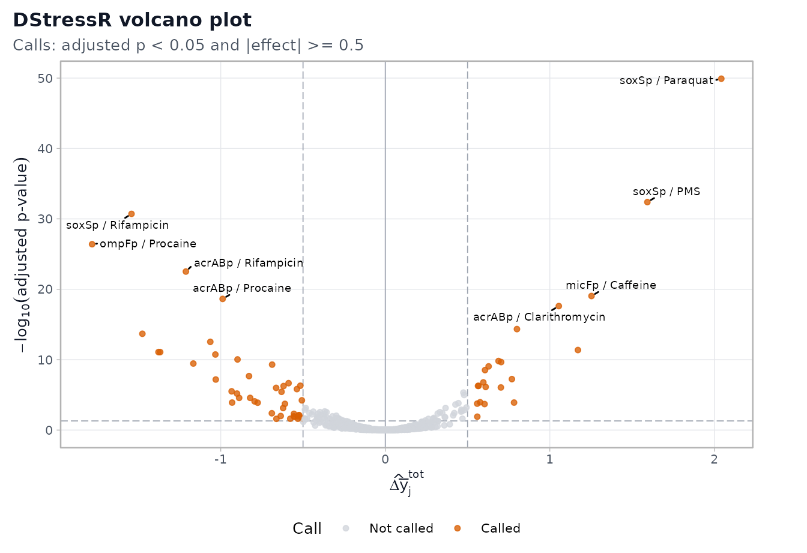
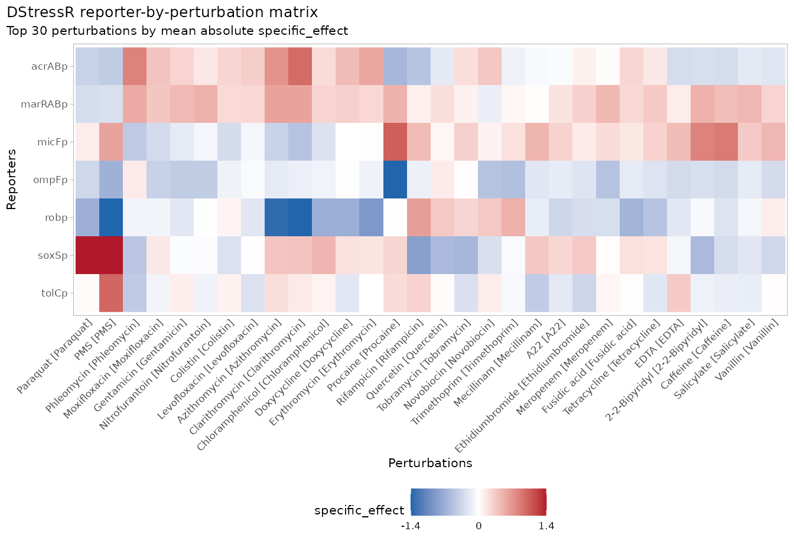
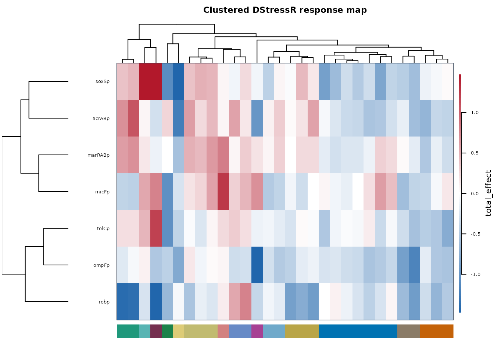

DStressR models reporter-activity responses in
high-throughput reporter and chemical-genomics screens. It constructs
growth-adjusted responses, estimates reporter-perturbation effects,
moderates uncertainty, and returns reproducible hit tables with
diagnostic plots. Growth summaries can come from any upstream workflow,
including simple AUC or endpoint summaries and, when available,
growth-curve models.
The package site contains use-case articles for the main analysis settings:
- E. coli promoter-compound screen with empty-vector calibration
- PFIbox fluorescence promoter-activity screen
- E. coli fluorescence stress screen
- Kochanowski promoter-activity compendium with supplied variances
- Salmonella empty-vector-control screen-specific workflow
This vignette uses the public E. coli reporter-compound screen of Binsfeld et al. (2025), distributed with DStressR as a compact AUC-level data object. The data originate from the PLOS Biology supplementary data and associated Zenodo archive (https://doi.org/10.1371/journal.pbio.3003260; https://doi.org/10.5281/zenodo.15600688).
Input files and table shape
DStressR expects a long measurement table with one row per measured reporter-perturbation-replicate observation. In a complete rectangular screen, the row count is approximately:
n_reporters x (n_compound_wells + n_control_wells) x n_replicatesThe table may contain additional rows when the same screen is repeated across batches, library plates, measurement plates, or experimental days. The important point is that these technical covariates remain in the table so they can be modeled rather than accidentally averaged away.
The required biological and technical information is:
- reporter or reporter construct
- perturbation or library-well identifier
- reference perturbation, for example
DMSOor water controls - luminescence summary
- growth summary
- replicate and optional technical covariates such as batch or plate
Column names are not fixed. They are mapped explicitly in
prepare_assay().
Load the public E. coli reporter-compound screen
library(DStressR)
screen <- subset(
binsfeld_reporter_auc,
strain == "WT" & removed == "No"
)
head(screen)
#> strain reporter replicate well drug compound
#> 1 WT EVC 1 A1 Water_1 Water
#> 2 WT EVC 1 A2 Water_1 Water
#> 3 WT EVC 1 A3 1-Methyluric acid 1-Methyluric acid
#> 4 WT EVC 1 A4 1-Methyluric acid 1-Methyluric acid
#> 5 WT EVC 1 A5 2,3-DHBA 2,3-DHBA
#> 6 WT EVC 1 A6 2,3-DHBA 2,3-DHBA
#> concentration_index dose_level concentration_ug_ml od_auc lux_auc
#> 1 1 4 0.0 2.435875 1209.7240
#> 2 2 3 0.0 2.657758 963.9789
#> 3 1 4 91.1 2.431864 1098.3103
#> 4 2 3 45.5 2.354903 1212.2085
#> 5 1 4 154.1 2.057219 958.0157
#> 6 2 3 77.1 2.180038 996.1697
#> od_auc_per_lux_auc removed
#> 1 496.6282 No
#> 2 362.7038 No
#> 3 451.6331 No
#> 4 514.7595 No
#> 5 465.6849 No
#> 6 456.9506 NoThe table contains one row per reporter, drug or water-reference
well, replicate, and serial-dilution observation. The original
drug labels are retained, including Water_1
and Water_2; dose_level increases with
compound concentration.
names(screen)
#> [1] "strain" "reporter" "replicate"
#> [4] "well" "drug" "compound"
#> [7] "concentration_index" "dose_level" "concentration_ug_ml"
#> [10] "od_auc" "lux_auc" "od_auc_per_lux_auc"
#> [13] "removed"Prepare the assay
prepare_assay() converts luminescence and growth
summaries into a growth-adjusted log2 response. By default, DStressR
estimates reporter-specific growth exponents from reference-condition
wells and shrinks them toward a global reference-well slope.
assay <- prepare_assay(
screen,
reporter = "reporter",
perturbation = "drug",
control = c("Water_1", "Water_2"),
lux = "lux_auc",
growth = "od_auc",
growth_exponent = "estimate",
batch = "dose_level",
replicate = "replicate",
growth_covariates = "replicate",
numeric_covariates = "dose_level",
background_reporter = "EVC",
background_by = c("drug", "dose_level", "replicate")
)
attr(assay, "destress")$growth_exponent_fit
#> reporter control_n log_growth_sd a_raw a_raw_se a_raw_df alpha_raw
#> 1 acrABp 16 0.2037412 12.082727 0.5257436 13 0.06996704
#> 2 EVC 16 0.1933252 9.823428 0.5023973 13 0.28970550
#> 3 marRABp 16 0.1715475 13.146961 0.2564950 13 0.53073940
#> 4 micFp 16 0.1799482 12.874535 0.2465778 13 0.74801983
#> 5 ompFp 16 0.1365465 15.489428 0.4125433 13 0.81220933
#> 6 robp 16 0.1088960 11.196892 0.8472631 13 0.50412672
#> 7 soxSp 16 0.1880037 13.499497 0.2459610 13 0.37824790
#> 8 tolCp 16 0.2010756 9.813360 0.6271326 13 0.12269575
#> alpha_raw_se alpha_raw_df alpha_covariates alpha_global alpha_global_se
#> 1 0.3097976 13 replicate 0.379046 0.09937215
#> 2 0.3391082 13 replicate 0.379046 0.09937215
#> 3 0.1529305 13 replicate 0.379046 0.09937215
#> 4 0.1518801 13 replicate 0.379046 0.09937215
#> 5 0.2545487 13 replicate 0.379046 0.09937215
#> 6 0.5261529 13 replicate 0.379046 0.09937215
#> 7 0.1622378 13 replicate 0.379046 0.09937215
#> 8 0.4110460 13 replicate 0.379046 0.09937215
#> alpha_global_covariates alpha_prior_var alpha_prior_sd alpha_shrunk
#> 1 reporter;replicate 1e-04 0.01 0.3787242
#> 2 reporter;replicate 1e-04 0.01 0.3789683
#> 3 reporter;replicate 1e-04 0.01 0.3796918
#> 4 reporter;replicate 1e-04 0.01 0.3806386
#> 5 reporter;replicate 1e-04 0.01 0.3797134
#> 6 reporter;replicate 1e-04 0.01 0.3790911
#> 7 reporter;replicate 1e-04 0.01 0.3790429
#> 8 reporter;replicate 1e-04 0.01 0.3788943
#> alpha_shrunk_se alpha_fixed_one alpha_diff_from_one
#> 1 0.009994794 1 -0.6212758
#> 2 0.009995655 1 -0.6210317
#> 3 0.009978690 1 -0.6203082
#> 4 0.009978395 1 -0.6193614
#> 5 0.009992292 1 -0.6202866
#> 6 0.009998194 1 -0.6209089
#> 7 0.009981058 1 -0.6209571
#> 8 0.009997042 1 -0.6211057To reproduce a fixed-ratio response, set
growth_exponent = 1, which gives the
log2(luminescence / growth) scale after the same optional
EVC calibration.
Fit the model workflow
fit_destress() creates the fitted model object while
accounting for technical covariates and retains the selected inferential
configuration. results() then constructs the contrast-level
inferential table, and call_hits() adds directional calls
at a chosen false-discovery-rate threshold. The result table reports
both the reference-relative total effect and the reporter-relative
effect after subtracting the perturbation-wide effect. Total effects are
the default for hit calling and effect plots; reporter-relative effects
can be selected explicitly.
fit <- fit_destress(
assay,
technical = c("replicate", "dose_level"),
testing = "moderated_t",
adjustment = "by_reporter"
)
tab <- results(fit)
head(tab)
#> reporter perturbation total_effect total_se total_statistic
#> 1 acrABp 1-Methyluric acid -0.021457035 0.1014051 -0.21159725
#> 13 acrABp 2-2-Bipyridyl -0.507066908 0.1119016 -4.53136423
#> 21 acrABp 2,3-DHBA -0.127903232 0.1014051 -1.26130999
#> 28 acrABp 4-Aminobenzoic acid 0.078135567 0.1014051 0.77052917
#> 35 acrABp 4-Aminosalicylic acid -0.008980912 0.1014051 -0.08856472
#> 42 acrABp A22 -0.369214389 0.1119016 -3.29945585
#> total_pvalue additive_total_effect additive_total_se empty_vector_effect
#> 1 8.324886e-01 NA NA NA
#> 13 6.992870e-06 NA NA NA
#> 21 2.076565e-01 NA NA NA
#> 28 4.412702e-01 NA NA NA
#> 35 9.294555e-01 NA NA NA
#> 42 1.022436e-03 NA NA NA
#> background_adjusted_effect background_adjusted_var_raw
#> 1 -0.021457035 0.01018467
#> 13 -0.507066908 0.01246399
#> 21 -0.127903232 0.01018467
#> 28 0.078135567 0.01018467
#> 35 -0.008980912 0.01018467
#> 42 -0.369214389 0.01246399
#> background_adjusted_df_raw global_effect global_se global_statistic
#> 1 629 0.01047815 0.05076760 0.2063945
#> 13 629 -0.22174188 0.05608266 -3.9538400
#> 21 629 -0.01358238 0.05076760 -0.2675403
#> 28 629 0.09810077 0.05076760 1.9323501
#> 35 629 0.03766254 0.05076760 0.7418619
#> 42 629 -0.33576292 0.05608266 -5.9869289
#> global_pvalue low_rank_effect rank_adjusted_total_effect
#> 1 8.365492e-01 0 -0.021457035
#> 13 8.559785e-05 0 -0.507066908
#> 21 7.891405e-01 0 -0.127903232
#> 28 5.376286e-02 0 0.078135567
#> 35 4.584466e-01 0 -0.008980912
#> 42 3.586191e-09 0 -0.369214389
#> rank_adjusted_total_se rank_adjusted_total_statistic
#> 1 0.1014051 -0.21159725
#> 13 0.1119016 -4.53136423
#> 21 0.1014051 -1.26130999
#> 28 0.1014051 0.77052917
#> 35 0.1014051 -0.08856472
#> 42 0.1119016 -3.29945585
#> rank_adjusted_total_pvalue rank_adjusted_total_df_for_test
#> 1 8.324886e-01 640.3341
#> 13 6.992870e-06 640.3341
#> 21 2.076565e-01 640.3341
#> 28 4.412702e-01 640.3341
#> 35 9.294555e-01 640.3341
#> 42 1.022436e-03 640.3341
#> rank_adjusted_global_effect relative_effect relative_se relative_statistic
#> 1 0.01047815 -0.03193519 0.09962289 -0.3205608
#> 13 -0.22174188 -0.28532503 0.10998930 -2.5941162
#> 21 -0.01358238 -0.11432085 0.09962289 -1.1475360
#> 28 0.09810077 -0.01996520 0.09962289 -0.2004078
#> 35 0.03766254 -0.04664346 0.09962289 -0.4682002
#> 42 -0.33576292 -0.03345147 0.10998930 -0.3041338
#> relative_pvalue total_var_raw relative_var residual_df relative_df_raw
#> 1 0.748604851 0.01018467 0.00985797 629 1071.458
#> 13 0.009610906 0.01246399 0.01206410 629 1071.445
#> 21 0.251412462 0.01018467 0.00985797 629 1071.458
#> 28 0.841199151 0.01018467 0.00985797 629 1071.458
#> 35 0.639735227 0.01018467 0.00985797 629 1071.458
#> 42 0.761084090 0.01246399 0.01206410 629 1071.445
#> relative_df_for_test total_padj_global total_padj_by_reporter
#> 1 1087.833 0.9619023849 9.315944e-01
#> 13 1087.820 0.0001022513 5.975725e-05
#> 21 1087.833 0.5296045464 4.174033e-01
#> 28 1087.833 0.7887503168 6.690226e-01
#> 35 1087.833 0.9940442759 9.600969e-01
#> 42 1087.820 0.0084095340 5.653468e-03
#> rank_adjusted_total_padj_global rank_adjusted_total_padj_by_reporter
#> 1 0.9619023849 9.315944e-01
#> 13 0.0001022513 5.975725e-05
#> 21 0.5296045464 4.174033e-01
#> 28 0.7887503168 6.690226e-01
#> 35 0.9940442759 9.600969e-01
#> 42 0.0084095340 5.653468e-03
#> relative_padj_global relative_padj_by_reporter total_padj relative_padj
#> 1 0.95570500 0.98500411 9.315944e-01 0.98500411
#> 13 0.06587475 0.04522295 5.975725e-05 0.04522295
#> 21 0.65308739 0.56603513 4.174033e-01 0.56603513
#> 28 0.97322913 0.98500411 6.690226e-01 0.98500411
#> 35 0.91113805 0.96393999 9.600969e-01 0.96393999
#> 42 0.95571246 0.98500411 5.653468e-03 0.98500411The key columns are:
-
total_effect: reference-relative response for the reporter-perturbation pair. -
global_effect: average perturbation-wide response across reporters. -
relative_effect: reporter-relative deviation from the perturbation-wide effect. -
total_pvalueandtotal_padj: test and BH-adjusted p-value for the total effect. -
relative_pvalueandrelative_padj: corresponding values for the reporter-relative effect.
The direct fitting functions remain available for existing scripts,
but fit_destress() is the recommended entry point for new
model-based analyses.
Empty-vector calibration
The Binsfeld screen contains an Empty Vector Control (EVC), which is
used above as a matched background reporter during response
construction. DStressR uses Huber calibration by default; least-squares
calibration and direct subtraction remain available through
background_method. The following call prepares the same
assay without EVC calibration for a direct comparison.
assay_without_evc <- prepare_assay(
screen,
reporter = "reporter",
perturbation = "drug",
control = c("Water_1", "Water_2"),
lux = "lux_auc",
growth = "od_auc",
growth_exponent = "estimate",
batch = "dose_level",
replicate = "replicate",
growth_covariates = "replicate",
numeric_covariates = "dose_level"
)Call hits
hits <- call_hits(
tab,
fdr = 0.05,
lfc = 0.5,
effect = "total_effect",
padj = "total_padj"
)
table(hits$hit)
#>
#> Downregulated Not DE Upregulated
#> 42 595 21
head(
hits[order(hits$total_padj, -abs(hits$total_effect)), ],
10
)
#> reporter perturbation total_effect total_se total_statistic
#> 458 soxSp Paraquat 2.0421536 0.12202155 16.736007
#> 496 soxSp PMS 1.5927747 0.12202155 13.053224
#> 553 soxSp Rifampicin -1.5424675 0.12202155 -12.640943
#> 507 ompFp Procaine -1.7820135 0.15131964 -11.776485
#> 551 acrABp Rifampicin -1.2120367 0.11190160 -10.831272
#> 121 micFp Caffeine 1.2532229 0.12618208 9.931861
#> 509 acrABp Procaine -0.9885807 0.10140507 -9.748829
#> 208 acrABp Clarithromycin 1.0545853 0.11190160 9.424220
#> 120 marRABp Caffeine 0.8001456 0.09272666 8.629079
#> 497 robp PMS -1.4764288 0.17509600 -8.432110
#> total_pvalue additive_total_effect additive_total_se empty_vector_effect
#> 458 1.299286e-52 NA NA NA
#> 496 8.823718e-35 NA NA NA
#> 553 6.223887e-33 NA NA NA
#> 507 4.232902e-29 NA NA NA
#> 551 3.220026e-25 NA NA NA
#> 121 9.637828e-22 NA NA NA
#> 509 4.964862e-21 NA NA NA
#> 208 7.767458e-20 NA NA NA
#> 120 4.847349e-17 NA NA NA
#> 497 2.231139e-16 NA NA NA
#> background_adjusted_effect background_adjusted_var_raw
#> 458 2.0421536 0.014874295
#> 496 1.5927747 0.014874295
#> 553 -1.5424675 0.014874295
#> 507 -1.7820135 0.023027442
#> 551 -1.2120367 0.012463989
#> 121 1.2532229 0.015925143
#> 509 -0.9885807 0.010184666
#> 208 1.0545853 0.012463989
#> 120 0.8001456 0.008469959
#> 497 -1.4764288 0.030926161
#> background_adjusted_df_raw global_effect global_se global_statistic
#> 458 644 0.44247430 0.05076760 8.715684
#> 496 644 0.16081460 0.05076760 3.167662
#> 553 644 -0.69445748 0.05388049 -12.888848
#> 507 625 -0.35237122 0.05076760 -6.940869
#> 551 629 -0.69445748 0.05388049 -12.888848
#> 121 641 0.36926273 0.05076760 7.273591
#> 509 629 -0.35237122 0.05076760 -6.940869
#> 208 629 0.07883706 0.05335092 1.477708
#> 120 631 0.36926273 0.05076760 7.273591
#> 497 632 0.16081460 0.05076760 3.167662
#> global_pvalue low_rank_effect rank_adjusted_total_effect
#> 458 2.534090e-17 0 2.0421536
#> 496 1.610766e-03 0 1.5927747
#> 553 6.490793e-34 0 -1.5424675
#> 507 9.684461e-12 0 -1.7820135
#> 551 6.490793e-34 0 -1.2120367
#> 121 1.039992e-12 0 1.2532229
#> 509 9.684461e-12 0 -0.9885807
#> 208 1.399842e-01 0 1.0545853
#> 120 1.039992e-12 0 0.8001456
#> 497 1.610766e-03 0 -1.4764288
#> rank_adjusted_total_se rank_adjusted_total_statistic
#> 458 0.12202155 16.736007
#> 496 0.12202155 13.053224
#> 553 0.12202155 -12.640943
#> 507 0.15131964 -11.776485
#> 551 0.11190160 -10.831272
#> 121 0.12618208 9.931861
#> 509 0.10140507 -9.748829
#> 208 0.11190160 9.424220
#> 120 0.09272666 8.629079
#> 497 0.17509600 -8.432110
#> rank_adjusted_total_pvalue rank_adjusted_total_df_for_test
#> 458 1.299286e-52 655.3341
#> 496 8.823718e-35 655.3341
#> 553 6.223887e-33 655.3341
#> 507 4.232902e-29 636.3341
#> 551 3.220026e-25 640.3341
#> 121 9.637828e-22 652.3341
#> 509 4.964862e-21 640.3341
#> 208 7.767458e-20 640.3341
#> 120 4.847349e-17 642.3341
#> 497 2.231139e-16 643.3341
#> rank_adjusted_global_effect relative_effect relative_se relative_statistic
#> 458 0.44247430 1.5996793 0.11500618 13.909508
#> 496 0.16081460 1.4319601 0.11500618 12.451158
#> 553 -0.69445748 -0.8480100 0.11641195 -7.284562
#> 507 -0.35237122 -1.4296422 0.13760438 -10.389511
#> 551 -0.69445748 -0.5175792 0.10888705 -4.753359
#> 121 0.36926273 0.8839602 0.11817040 7.480386
#> 509 -0.35237122 -0.6362095 0.09962289 -6.386178
#> 208 0.07883706 0.9757482 0.10862677 8.982576
#> 120 0.36926273 0.4308829 0.09333023 4.616756
#> 497 0.16081460 -1.6372434 0.15636443 -10.470690
#> relative_pvalue total_var_raw relative_var residual_df relative_df_raw
#> 458 3.641795e-40 0.014874295 0.013207705 644 932.6083
#> 496 4.517557e-33 0.014874295 0.013207705 644 932.6083
#> 553 6.564589e-13 0.014874295 0.013539331 644 977.1701
#> 507 8.190720e-24 0.023027442 0.019031381 625 788.4796
#> 551 2.279933e-06 0.012463989 0.011817685 629 1030.5906
#> 121 1.725831e-13 0.015925143 0.013958310 641 905.5763
#> 509 2.515021e-10 0.010184666 0.009857970 629 1071.4578
#> 208 1.219199e-18 0.012463989 0.011759832 629 1021.8465
#> 120 4.317977e-06 0.008469959 0.008633179 631 1181.6394
#> 497 4.646025e-24 0.030926161 0.024673324 632 744.2360
#> relative_df_for_test total_padj_global total_padj_by_reporter
#> 458 948.9834 8.549304e-50 1.221329e-50
#> 496 948.9834 2.903003e-32 4.147148e-33
#> 553 993.5451 1.365106e-30 1.950151e-31
#> 507 804.8547 6.963123e-27 3.978928e-27
#> 551 1046.9656 4.237555e-23 3.026825e-23
#> 121 921.9513 1.056948e-19 9.059558e-20
#> 509 1087.8328 4.666971e-19 2.333485e-19
#> 208 1038.2216 6.388734e-18 2.433803e-18
#> 120 1198.0144 3.543950e-15 4.556508e-15
#> 497 760.6110 1.468090e-14 2.097271e-14
#> rank_adjusted_total_padj_global rank_adjusted_total_padj_by_reporter
#> 458 8.549304e-50 1.221329e-50
#> 496 2.903003e-32 4.147148e-33
#> 553 1.365106e-30 1.950151e-31
#> 507 6.963123e-27 3.978928e-27
#> 551 4.237555e-23 3.026825e-23
#> 121 1.056948e-19 9.059558e-20
#> 509 4.666971e-19 2.333485e-19
#> 208 6.388734e-18 2.433803e-18
#> 120 3.543950e-15 4.556508e-15
#> 497 1.468090e-14 2.097271e-14
#> relative_padj_global relative_padj_by_reporter total_padj relative_padj
#> 458 2.396301e-37 3.423287e-38 1.221329e-50 3.423287e-38
#> 496 1.486276e-30 2.123252e-31 4.147148e-33 2.123252e-31
#> 553 3.926818e-11 2.056905e-11 1.950151e-31 2.056905e-11
#> 507 1.347373e-21 7.699277e-22 3.978928e-27 7.699277e-22
#> 551 5.173090e-05 3.571896e-05 3.026825e-23 3.571896e-05
#> 121 1.261774e-11 8.111407e-12 9.059558e-20 8.111407e-12
#> 509 1.272988e-08 7.880400e-09 2.333485e-19 7.880400e-09
#> 208 1.604466e-16 1.146047e-16 2.433803e-18 1.146047e-16
#> 120 9.165255e-05 5.073623e-05 4.556508e-15 5.073623e-05
#> 497 1.019028e-21 4.367263e-22 2.097271e-14 4.367263e-22
#> hit
#> 458 Upregulated
#> 496 Upregulated
#> 553 Downregulated
#> 507 Downregulated
#> 551 Downregulated
#> 121 Upregulated
#> 509 Downregulated
#> 208 Upregulated
#> 120 Upregulated
#> 497 DownregulatedIn real screens, the FDR cutoff should be paired with domain knowledge and diagnostics. For reference-rich designs, empirical replicate/permutation p-values can be used as an additional calibration check.
Visualize the screen
The standard volcano plot labels the strongest reporter-perturbation pairs.
plot_volcano(
hits,
effect = "total_effect",
padj = "total_padj",
fdr = 0.05,
lfc = 0.5,
top_n = 8,
top_reporters = 6
)
A response heatmap gives a matrix-level view of the reporter-perturbation response surface.
plot_response_heatmap(
hits,
value = "total_effect",
top_n_perturbations = 30
)
For broader screens, clustered heatmaps help reveal perturbation and reporter groups with similar response profiles.
plot_response_clustered_heatmap(
hits,
value = "total_effect",
top_n_perturbations = 30,
title = "Clustered DStressR response map"
)